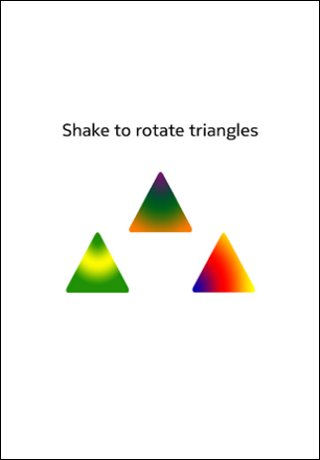

Qt Sensors - ShakeIt QML Example

ShakeIt in QML
The sensor gesture example demonstrates the steps for creating a QML application that uses sensor gestures and the included shake sensor.
Writing a QML application that uses the Shake QML sensorgestures type requires the following steps:
Import the Sensors Declarative module.
import QtSensors 5.0
Add a SensorGesture QML type.
SensorGesture {
In the SensorGesture type, specify which gesture to be used. Note that this can be a comma separated list. Here we are only interested in one gesture recognizer.
gestures : ["QtSensors.shake", "QtSensors.whip", "QtSensors.twist", "QtSensors.cover", "QtSensors.hover", "QtSensors.turnover", "QtSensors.pickup", "QtSensors.slam" , "QtSensors.doubletap"]
Use the 'enabled' property to start the sensor gesture.
enabled: true
Use the onDetected signal to do stuff.
onDetected:{ console.debug(gesture) label.text = gesture if (gesture == "shake") { window.state == "rotated" ? window.state = "default" : window.state = "rotated" timer.start() } if (gesture == "whip") { window.state == "whipped" ? window.state = "default" : window.state = "whipped" timer.start() } if (gesture == "twistRight") { window.state == "twistedR" ? window.state = "default" : window.state = "twistedR" timer.start() } if (gesture == "twistLeft") { window.state == "twistedL" ? window.state = "default" : window.state = "twistedL" timer.start() } if (gesture == "cover") { window.state == "covered" ? window.state = "default" : window.state = "covered" timer.start() } if (gesture == "hover") { window.state == "hovered" ? window.state = "default" : window.state = "hovered" timer.start() } if (gesture == "turnover") { window.state = "default" loopy2a_mono.play(); timer.start() } if (gesture == "pickup") { window.state = "default" phone.play() timer.start() } if (gesture == "slam") { window.state == "slammed" ? window.state = "default" : window.state = "slammed" timer.start() } if (gesture == "doubletap") { window.state == "doubletapped" ? window.state = "default" : window.state = "doubletapped" timer.start() } }
There are additional gestures to shake which are supported: whip, twistRight, hover, cover, turnover and pickup.
Files: